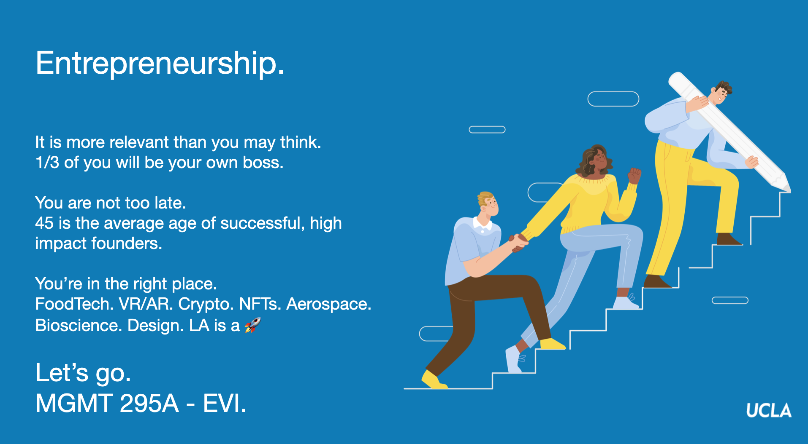

MGMT 295A — Entrepreneurship and Venture Initiation
UCLA Anderson MBA
Price Center for Entrepreneurship & Innovation
Upcoming: Fall 2026
Past sessions: Winter 2023, Spring 2024, Winter 2025, Fall 2025
Q+A on why EVI is about giving you the confidence to innovate
Class description
One in three of you will be your own boss at some point — and that doesn't include those who will join, invest in, or advise startups. Whether you already have a pitch, a side hustle, or an idea, this class provides a research-backed toolkit to turn an idea into an impactful company. The course includes case discussions, lectures, guest speakers, and a course-long startup project.
Testimonials
“I would recommend this class to everyone in the MBA program! Prof. Jane brought amazing guest speakers and facilitated great conversations among students... Highly recommend it to everyone.”
“This was one of my favorite classes at Anderson. The professor was very effective and made each class enjoyable.”
“I loved this course. It elucidated many confusions I've had about entrepreneurship and VC...”
